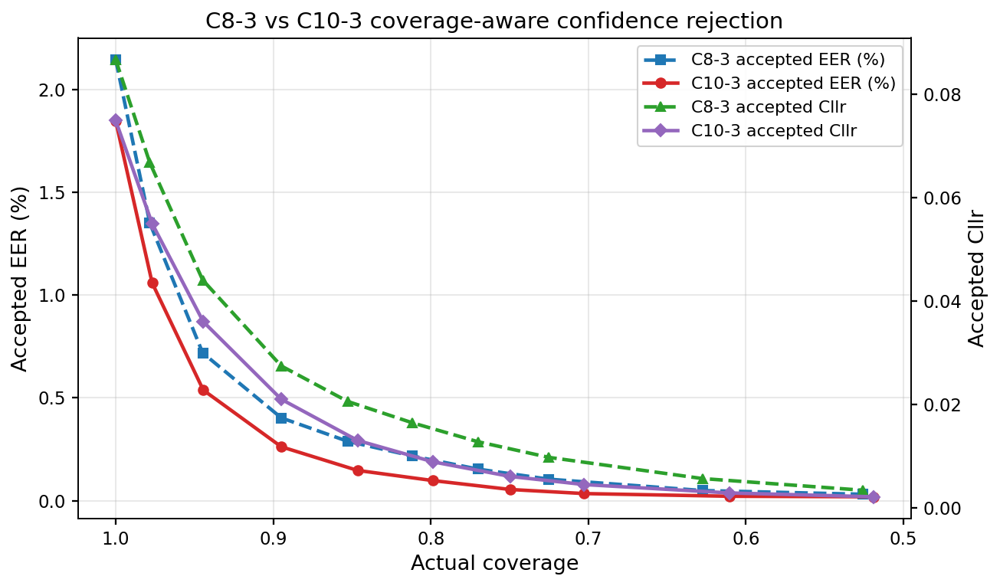

Reliable cross-lingual ASV through metadata-aware calibration.
AMECxSV combines scores from six fixed speaker encoders with language-match and duration-reliability context. A compact MLP produces a calibrated posterior, while a confidence gate supports selective abstention when automatic decisions are unreliable. The work targets score calibration and fusion, not encoder training.
Method overview
Trial-level cosine scores and compact calibration context are concatenated, deterministically expanded from 10 raw inputs to 112 features, normalized, and passed to a two-hidden-layer width-24 MLP. Scores and metadata share one flat input vector; there are no separate branches, residual paths, or attention.
Scope of the claim: all encoders are frozen, and absolute score performance remains encoder-dependent. AMECxSV improves calibration and fusion of fixed scores; it does not introduce a stronger encoder or claim the highest raw ASV score across all systems.

Main results
Single-score systems establish raw, classical-calibration, and condition-aware baselines. MultiScore-FC/ABS isolate score fusion, while AMEC-FC/ABS add aligned language and duration context.
| System | Setting | Coverage | EER | Cllr | actDCF .001 | actDCF .01 |
|---|---|---|---|---|---|---|
| Raw Single-Score | Raw score | 1.000 ± 0.000 | 3.60 ± 0.04% | 0.895 ± 0.000 | 1.000 ± 0.000 | 1.000 ± 0.000 |
| Global Logistic | Single score | 1.000 ± 0.000 | 3.60 ± 0.04% | 0.140 ± 0.001 | 0.732 ± 0.001 | 0.415 ± 0.005 |
| PAV / Isotonic | Single score | 1.000 ± 0.000 | 3.60 ± 0.04% | 0.141 ± 0.001 | 0.968 ± 0.000 | 0.377 ± 0.009 |
| QMF Calibration | Score + QMF | 1.000 ± 0.000 | 3.58 ± 0.04% | 0.142 ± 0.001 | 1.000 ± 0.000 | 0.539 ± 0.006 |
| Language Calibration | Score + language | 1.000 ± 0.000 | 3.52 ± 0.04% | 0.140 ± 0.001 | 0.771 ± 0.014 | 0.547 ± 0.006 |
| Reliability Calibration | Score + reliability | 0.880 ± 0.001 | 3.86 ± 0.04% | 0.151 ± 0.001 | 0.959 ± 0.001 | 0.482 ± 0.006 |
| MultiScore-FC | Score vector | 1.000 ± 0.000 | 2.15 ± 0.03% | 0.087 ± 0.001 | 0.645 ± 0.053 | 0.377 ± 0.016 |
| MultiScore-ABS | Score vector + rejection | 0.812 ± 0.001 | 0.22 ± 0.02% | 0.016 ± 0.001 | 0.556 ± 0.066 | 0.218 ± 0.018 |
| AMEC-FC | Scores + metadata | 1.000 ± 0.000 | 1.85 ± 0.03% | 0.075 ± 0.001 | 0.470 ± 0.023 | 0.283 ± 0.013 |
| AMEC-ABS | AMEC-FC + rejection | 0.798 ± 0.001 | 0.10 ± 0.01% | 0.009 ± 0.001 | 0.334 ± 0.030 | 0.097 ± 0.013 |
These rows compare score calibration and fusion under fixed encoder inputs; they are not an encoder leaderboard.
Matched metadata controls
The strict score-only control keeps the same 10 input slots, 112 expanded features, 3,433 parameters, and training protocol as AMEC-FC.
External-system results
Source-specific score-only and score-plus-metadata heads are evaluated for Official, LI-MSV, and their dual-score fusion.
Selective and side analysis
Coverage-risk AUC, class-specific rejection rates, condition-stratified checks, and speaker-clustered bootstrap analyses accompany the selected operating points.
Selective-result check: at the nominal 0.80 operating point, AMEC-ABS rejects 20.42% of target and 19.54% of non-target trials; MultiScore-ABS rejects 19.25% and 17.87%. The accepted-set gain is not produced by rejecting only one class.

Official TidyVoice and LI-MSV
EER and Cllr under raw scoring, metadata-aware calibration, and abstention.
Open figure
AMEC-ABS coverage-risk
EER AURC improves from 0.3175 to 0.2191 relative to MultiScore-ABS.
Open figure{kind=link}

C9 side validation
Accepted EER across six embedding front ends under a separate protocol.
Open figureReproducible code
Source code covers single-score baselines, MultiScore and AMEC variants, strict matched controls, ablations, coverage-risk analysis, external score-only and score-plus-metadata heads, and similarity-fusion checks. Dataset files and pretrained checkpoints are intentionally excluded.
Core experiments
experiments/ contains calibration, fusion, ablation, abstention, and follow-up analyses.
Data preparation
data_prep/ builds protocols, fixed splits, embeddings, score tables, and C9 inputs.
External validation
external/ and similarity/ contain matched baseline and limitation experiments.
pip install -r requirements.txt
python run.py --list
python run.py --main
python run.py --followup